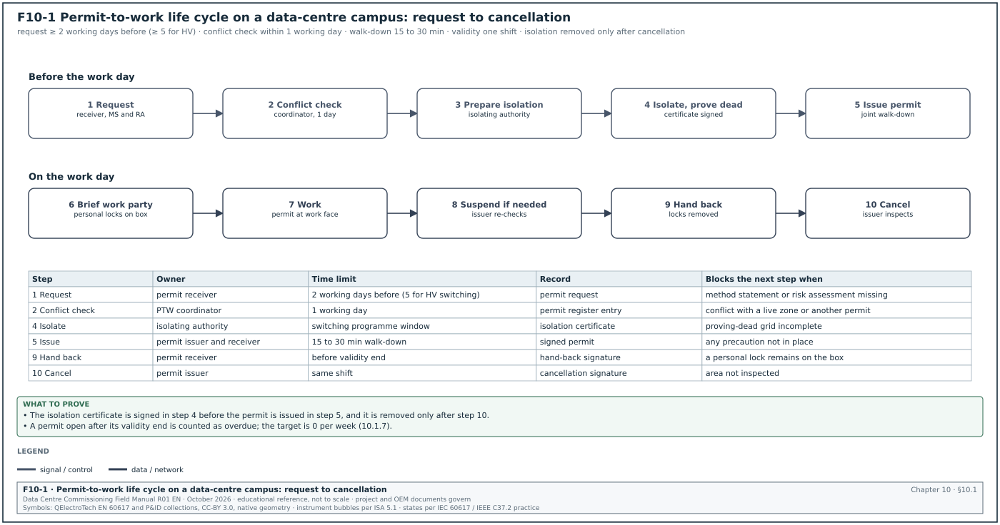
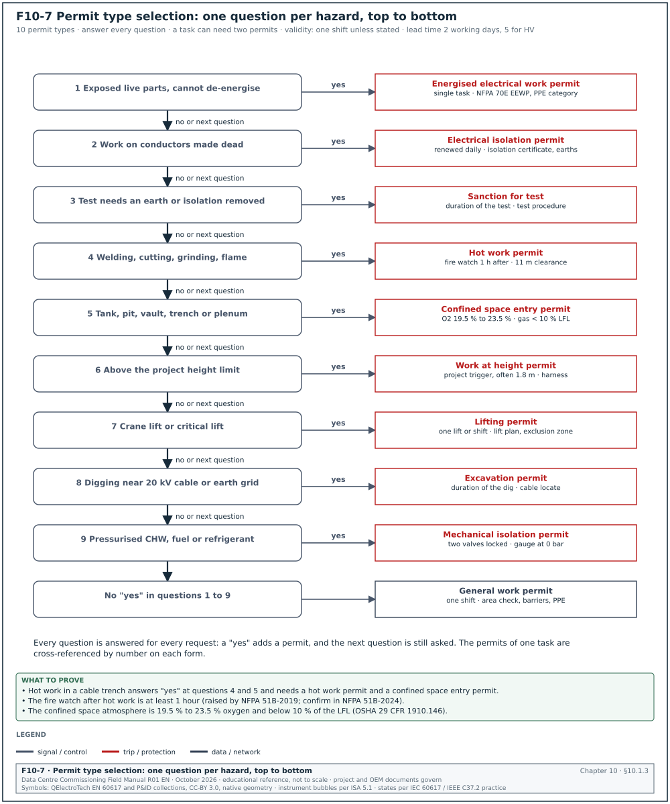
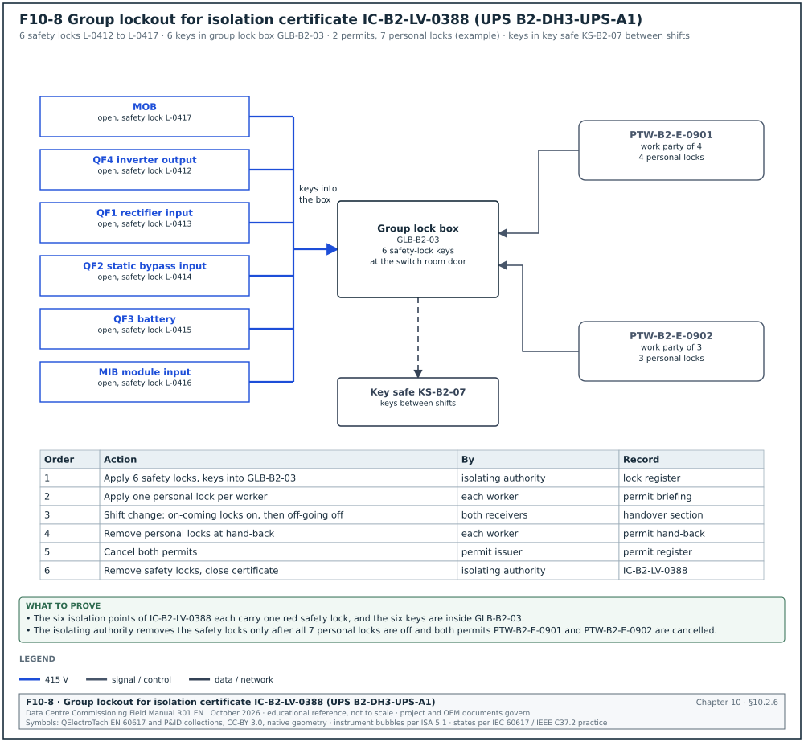
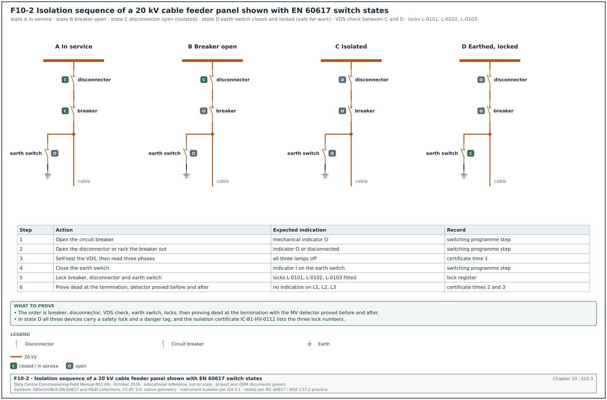
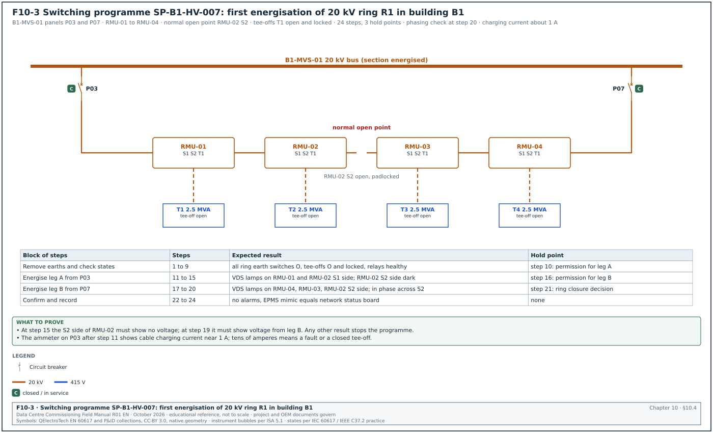
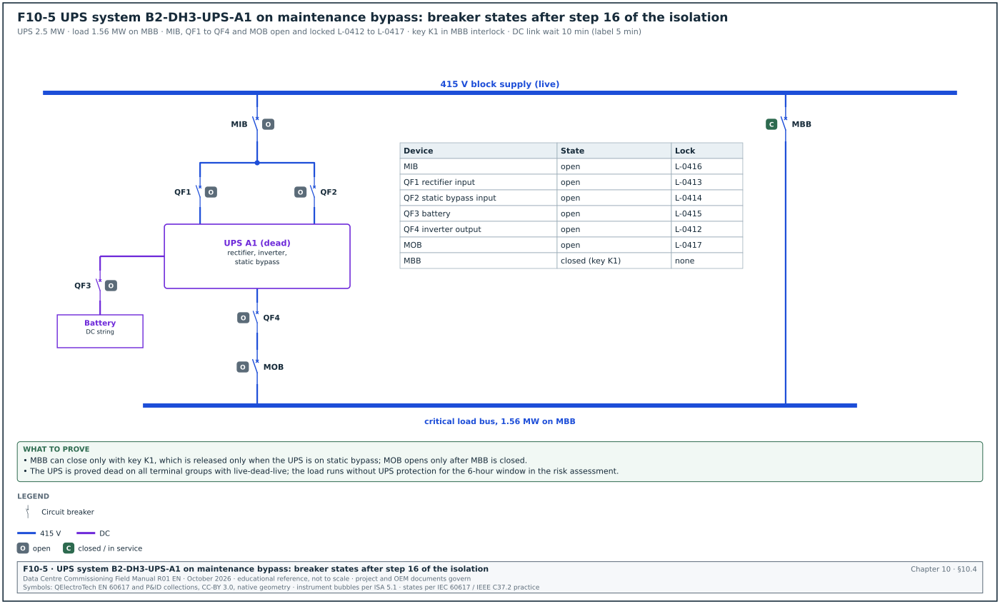
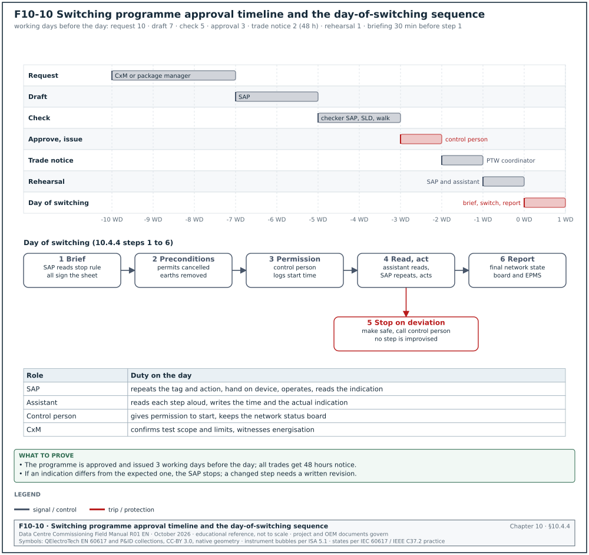
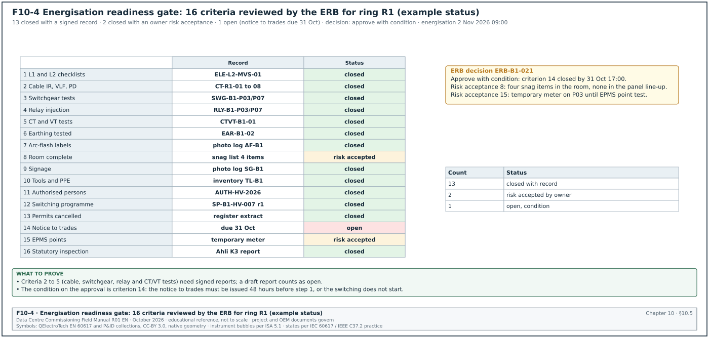
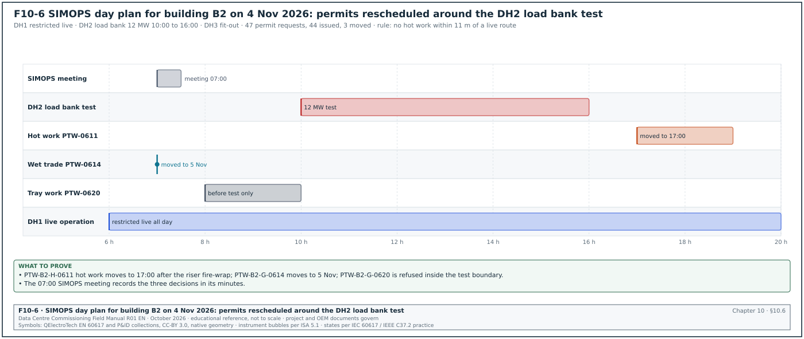
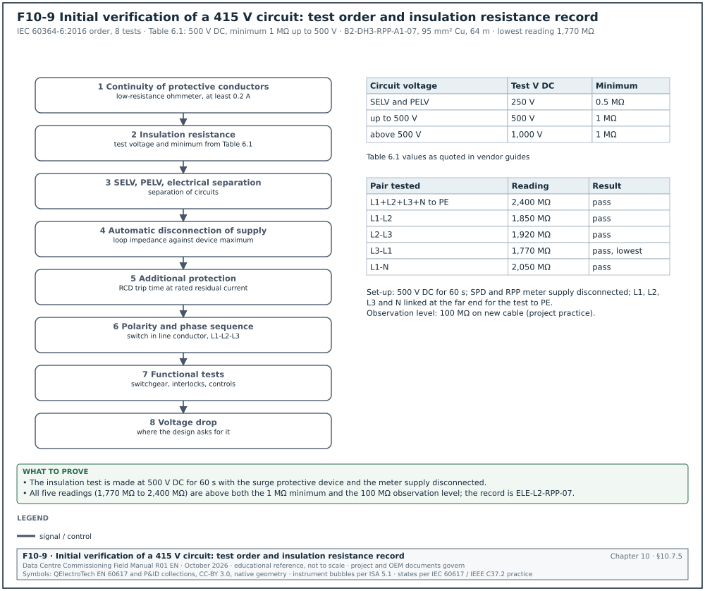

10.0Scope of this chapter
This chapter describes how work is authorised and how equipment is isolated and proved dead on a hyperscale data-centre campus. It also describes how high-voltage (HV) and low-voltage (LV) switching is written and carried out, and how a system is declared ready to energise. It applies to construction, commissioning and the first operation of a building while other parts are still under construction. Chapter 13 gives the medium-voltage (MV) test values that feed the energisation gate. Chapter 16 gives the uninterruptible power supply (UPS) tests. Chapter 28 covers integrated systems testing (IST) under live conditions.
- Permit-to-work system. What a permit to work (PTW) is, who issues and receives it, the permit types and the permit fields. It also covers the life cycle with time limits, suspension, shift handover and the permit register with its key performance indicators (KPIs).
- Isolation and lockout/tagout. The six steps of OSHA 29 CFR 1910.147, the electrical requirements of OSHA 29 CFR 1910.333 and the process for an electrically safe work condition in NFPA 70E-2024 Article 120. It also covers isolation certificates, lock types, group lockout and the lock and tag register.
- Test before touch. The live-dead-live method, the instruments, their category ratings and the proving unit, MV voltage detection and portable earthing.
- Switching programmes. The format (step, location, device, action, expected indication, actual indication, signature), the roles, the approval timeline, read-back, deviation rules and a full programme for a 20 kV ring.
- Energisation administration. The energisation readiness board (ERB), the gate criteria, the energisation certificate, the energised-zone declaration and the notice to all trades.
- Simultaneous operations. Work in a building where some areas are live and some are still under construction (SIMOPS).
- Indonesian requirements. Undang-Undang (UU) No. 1 Tahun 1970 on work safety, Permenaker No. 12 Tahun 2015 on electrical occupational safety and health (K3 Listrik) and the duties of the Ahli K3 Listrik. It also covers the Sertifikat Laik Operasi (SLO) and the Nomor Identitas Instalasi (NIDI) under the ministerial regulations (Permen) of the Kementerian Energi dan Sumber Daya Mineral (ESDM). The list ends with the Persyaratan Umum Instalasi Listrik (PUIL) 2020 (SNI 0225:2020).
- Worked examples. A 20 kV ring energisation of one MSC-1 building, a UPS maintenance bypass isolation, an initial verification insulation test, a permit register analysis and a SIMOPS conflict check.
Documents and standards used: OSHA 29 CFR 1910.147 and 1910.333, NFPA 70E-2024, HSE HSG85 (third edition, 2013), HSE GS38, IEC 60364-6, IEC 61243-1 and IEC 61243-3, IEC 61010-1, IEC 61230 and IEC 62271-200. The chapter also uses UU 1/1970, Permenaker 12/2015 and Permenaker 33/2015, Permen ESDM 10/2021 and 12/2021, PUIL 2020, ASHRAE Guideline 0-2019 and the MSC-1 case ledger.
10.1The permit-to-work system: purpose, roles and permit types


10.1.1What a permit to work is and why it exists
A permit to work is a written authority to carry out a defined task, at a defined place, in a defined time window, under defined precautions. It is part of a safe system of work. It records that a competent person has identified the hazards, that the isolations and controls are in place, and that the person doing the work has read and accepted them. On a data-centre campus the permit system has four purposes.
- Control of hazardous work. Electrical work, hot work, confined-space entry, work at height, lifting and excavation can kill or can damage live plant. The permit stops the work until the controls are in place.
- Control of interaction between trades. On a campus with 1,000 or more workers per building, the permit office sees all planned work in an area. It can refuse two permits that conflict, for example hot work above a cable tray that is being pulled.
- Protection of live and commissioned plant. After a switchboard is energised or a chilled-water loop is filled, any work near it needs the permission of the person who controls it. The permit is that permission.
- Record. The permit and the permit register show who worked where, under which isolations, and when the plant was returned to service. Incident investigation and the handover file both use the permit register.
10.1.2Roles in the permit system
The role names differ between projects. The table uses the names that most hyperscale programmes use and gives the common alternatives. The project PTW procedure names the persons and their authorisation level.
| Role | Common alternative names | Duties | Typical holder on a campus |
|---|---|---|---|
| Permit issuer | Authorising person, issuing authority | Reviews the method statement and risk assessment, defines precautions, signs the permit, closes it | General contractor (GC) PTW coordinator; after energisation, the authorised person for the live system |
| Isolating authority | Authorised person (electrical), senior authorised person (SAP) for HV | Makes and records the isolations, applies safety locks, issues the isolation certificate | Electrical contractor authorised person; for 20 kV, the SAP |
| Area authority | Area controller, zone owner | Controls the area, confirms no conflicting work, signs the area acceptance | Building package manager or the zone engineer |
| Permit receiver | Performing authority, competent person in charge | Accepts the permit, briefs the work party, keeps the permit at the work face, returns it | Subcontractor supervisor |
| Work party member | Authorised worker | Signs the permit briefing, applies a personal lock | Electricians, fitters |
| Ahli K3 Listrik | Electrical safety expert (Indonesia) | Supervises electrical safety, inspects and tests installations under Permenaker 12/2015 | Owner or contractor appointed Ahli K3 Listrik |
| Commissioning manager | CxM, commissioning authority | Requests commissioning permits, confirms test scope and test limits, attends the ERB | Owner or CxA |
| Fire watch and standby person | Attendant | Watches hot work or confined-space entry, raises the alarm | Trained worker named on the permit |
Check: One person may hold two roles (for example permit issuer and isolating authority) only when the project procedure allows it. The permit issuer and the permit receiver are never the same person on the same permit.
10.1.3Permit types used on a data-centre campus
| Permit type | Trigger | Main precautions | Maximum validity (typical) | Linked documents |
|---|---|---|---|---|
| General work permit | Work in a controlled area that is not covered by another type | Area check, access route, barriers, personal protective equipment (PPE) | One shift | Method statement, risk assessment |
| Hot work permit | Welding, cutting, grinding, brazing, open flame | Remove combustibles within the stated radius, fire extinguisher, fire watch during and after the work, smoke detector isolation request | One shift | Fire system impairment request |
| Electrical isolation permit (permit to work on de-energised equipment) | Work on or near conductors that are made dead | Isolation certificate, locks, proving dead, earthing for MV | One shift, renewed daily | Isolation certificate, switching programme |
| Energised electrical work permit | Work on or near exposed live parts where de-energising is not feasible | Justification, shock and arc-flash risk assessment, PPE category, approach boundaries, signatures of the responsible manager | Single task | NFPA 70E energised electrical work permit |
| Sanction for test | Testing that needs the removal of an isolation or earth for a short time (for example a very low frequency (VLF) test on an MV cable) | Test area barriers, test voltage, test equipment, safe discharge | Duration of the test | Test procedure, isolation certificate |
| Confined space entry permit | Entry into a tank, pit, vault, cable trench or plenum classified as a confined space | Atmosphere test, ventilation, standby person, rescue plan | One shift | Gas test record, rescue plan |
| Work at height permit | Work above the project height limit (scissor lift, scaffold, roof edge, cable tray at height) | Fall protection, equipment inspection, exclusion zone below | One shift | Lift inspection, harness inspection |
| Lifting permit | Lifts with a crane, or any critical lift (transformer, generator, chiller module) | Lift plan, load chart, exclusion zone, appointed person | One lift or one shift | Lift plan |
| Excavation and ground disturbance permit | Digging near buried 20 kV cables or earthing grid | Cable locate, hand dig near services | Duration of the dig | Utility drawings, cable avoidance survey |
| Mechanical isolation permit | Work on pressurised chilled-water, fuel or refrigerant systems | Valve locks, vents and drains, pressure proving | One shift | Mechanical isolation certificate |
Figure F10-7 shows how the PTW coordinator selects the permit types for one task, with the main precaution and validity of each type.


The working values below are common hyperscale practice. Each one depends on the project procedure and the local law.
| Item | Typical value | Source and status |
|---|---|---|
| Fire watch after hot work ends | at least 1 hour; the project fire strategy may add monitoring time | NFPA 51B-2019 raised the fire watch from 30 minutes to 1 hour, as stated in the 2019 edition summaries (confirm the fire watch clause of NFPA 51B-2024 in the NFPA free-access reader) |
| Clearance of combustibles from hot work | 11 m (35 ft) radius or protected by covers | NFPA 51B, as applied in university hot work permits (confirm the 35 ft rule in the hot work chapter of NFPA 51B-2024) |
| Work at height in Indonesia | any work where a difference in level can cause a fall; the regulation sets no minimum height, and projects often use 1.8 m as the permit trigger | Permenaker No. 9 Tahun 2016 Pasal 1 angka 2 (definition); the 1.8 m in that regulation is the maximum length of a personal fall-arrest lanyard |
| Confined space oxygen range | 19.5 % to 23.5 % by volume | OSHA 29 CFR 1910.146(b), definition of hazardous atmosphere |
| Confined space flammable gas | below 10 % of the lower flammable limit (LFL) | OSHA 29 CFR 1910.146(b), definition of hazardous atmosphere |
| Gas test validity before entry | test immediately before entry, continuous monitoring during entry | project procedure |
10.1.4Fields of the permit form
Every permit type uses the same header and close-out fields. The type-specific fields are added in a second section.
| Field | Type | Example value |
|---|---|---|
| Permit number | text, unique, pre-printed or system-generated | PTW-B1-E-0457 |
| Permit type | pick list | Electrical isolation |
| Building, level, room | pick list | B1, L1, MV switch room MVR-1 |
| Equipment tags | text list | B1-MVS-01 panels P03 to P05 |
| Task description | text | Terminate 20 kV cable B1-F2-C1 at panel P04 |
| Method statement and risk assessment references | document numbers | MS-ELE-031 rev C, RA-ELE-031 rev C |
| Hazards identified | check list | stored energy, adjacent live panel P06, induced voltage |
| Isolation certificate number | text | IC-B1-HV-0112 |
| Precautions | check list and text | earth switch P04 closed and locked, barrier at P06 |
| PPE | check list | arc-rated clothing 8 cal/cm², insulating gloves class 2 |
| Valid from, valid to | date and time | 31 Oct 2026 07:30 to 31 Oct 2026 17:30 |
| Permit issuer name, signature, time | signature | A. Pratama, 07:20 |
| Area authority name, signature | signature | R. Hidayat, 07:22 |
| Permit receiver name, signature, time | signature | D. Saputra, 07:25 |
| Work party briefing signatures | list of signatures | 6 names |
| Suspension record | table of time, reason, signatures | 12:00 to 13:00 lunch, permit held by issuer |
| Hand-back declaration | check box and signature | work complete, tools removed, guards replaced |
| Cancellation | signature and time | 16:50, A. Pratama |
10.1.5Permit life cycle with time limits
Figure F10-1 shows the life cycle as a workflow with the owner, time limit and record of each step.
Trigger: A task in the three-week look-ahead (chapter 11) needs a permit.
Owner: The permit receiver raises the request. The permit issuer owns the decision.
Steps:
- Submit the permit request. The subcontractor supervisor submits the request with the method statement and risk assessment at least 2 working days before the work. For HV switching or work in an energised building the lead time is 5 working days because the switching programme has to be written and checked.
- Check for conflicts. The PTW coordinator compares the request with all open and planned permits in the same room and the rooms above and below. The coordinator records the result in the permit register within 1 working day.
- Prepare isolations. The isolating authority writes or selects the isolation certificate and, for HV, the switching programme. The programme is checked by a second authorised person.
- Carry out the isolation. On the day, the isolating authority isolates, locks, proves dead and, for MV, earths the equipment. The isolating authority signs the isolation certificate.
- Issue the permit. The permit issuer and the permit receiver walk the work area together and check each precaution on the permit. The issuer signs, then the receiver signs. The walk-down takes 15 to 30 minutes for an electrical permit.
- Brief the work party. The permit receiver reads the permit to the work party. Each worker signs the briefing section and applies a personal lock to the group lock box.
- Keep the permit at the work face. The permit copy stays at the work location in a clear holder. The issuer copy stays in the permit office.
- Suspend when needed. Work stops for breaks, for a fire alarm or for a change of conditions. The receiver returns the permit or marks it suspended. Work restarts only after the issuer re-checks the area.
- Hand back at the end of the shift. The receiver signs that the work is complete or that the area is safe to leave. Each worker removes the personal lock.
- Cancel the permit. The issuer inspects the area and cancels the permit. Only after cancellation can the isolating authority remove the isolation.
Acceptance: The permit register shows each permit with issue time, hand-back time and cancellation time. No permit stays open past its validity. A permit that is not handed back by the end of its validity is treated as an incident.
Records: Signed permit, isolation certificate, gas test record (if any), permit register entry.
10.1.6Shift handover and long-duration work
A permit is valid for one shift. Work that runs for several days, for example a 20 kV cable termination campaign, uses one of two methods. In the first method, a new permit is issued each day under the same isolation certificate, and the isolation stays in place. In the second method, the permit is extended at shift change. The off-going receiver and the on-coming receiver both sign the handover section, and the issuer re-checks the precautions. OSHA 29 CFR 1910.147(f)(4) requires specific procedures at shift or personnel changes so that lockout protection continues without a gap.
- Locks at shift change. The on-coming workers apply their personal locks to the group lock box before the off-going workers remove theirs. At no moment is the group lock box without a personal lock while work continues.
- Isolation continuity. The isolation certificate stays open. The isolating authority confirms at handover that the safety locks and earths are still in place.
- Night shift limits. Many projects forbid new HV isolations between 20:00 and 06:00 except in an emergency. The switching programme states the planned time window.
10.1.7Permit register fields and KPIs
| Register field | Type | Example |
|---|---|---|
| Permit number | text | PTW-B1-E-0457 |
| Type | pick list | Electrical isolation |
| Location | text | B1 L1 MVR-1 |
| Requested date | date | 27 Oct 2026 |
| Issued date and time | date-time | 31 Oct 2026 07:20 |
| Planned end | date-time | 31 Oct 2026 17:30 |
| Handed back | date-time | 31 Oct 2026 16:40 |
| Cancelled | date-time | 31 Oct 2026 16:50 |
| Linked isolation certificate | text | IC-B1-HV-0112 |
| Status | pick list | issued, suspended, handed back, cancelled, overdue |
| Audit result | pick list | compliant, minor finding, major finding |
| KPI | Definition | Target (typical) |
|---|---|---|
| Overdue permits | permits open after their validity end, per week | 0 |
| Permit audit compliance | audited permits with no major finding ÷ audited permits | ≥ 95 % |
| Request lead time | working days between request and planned start | ≥ 2 days (≥ 5 for HV) |
| Permit conflicts found | conflicts found by the coordinator before issue | recorded, trend only |
| Isolation errors | isolations found incomplete at walk-down | 0 |
Worked example: Permit register analysis for building B1 in week 43. The register lists 412 permits issued in the week: 188 general, 96 hot work, 74 electrical isolation, 3 energised electrical work, 21 confined space, 25 work at height and 5 lifting. The safety team audited 60 permits at the work face. Three audits found a major finding: two hot-work permits with no fire extinguisher at the work face, and one electrical permit with the permit copy missing from the work face. Audit compliance = (60 − 3) ÷ 60 = 95.0 %, which meets the 95 % target with no margin. Two permits were found open at 19:30 after a 17:30 validity end, so the overdue count is 2 and the target of 0 is missed. The PTW coordinator records both as incidents, and the weekly report (chapter 11) lists the actions: a 17:00 permit-office call to every receiver with an open permit, and a fire extinguisher check added to the hot-work walk-down.
10.2Energy isolation and lockout/tagout
10.2.1What isolation is
Isolation is the separation of equipment from every source of energy, secured so that the energy cannot return while people work. Electrical isolation opens a device that gives a visible or verified gap, then locks it. Lockout/tagout (LOTO) is the US term for applying locks and tags to energy-isolating devices. In UK and IEC practice the same steps are called "isolate, secure, prove dead and earth". The data-centre campus uses both terms because the contractors come from both traditions.
Isolation on a data-centre campus covers more than electricity. A UPS module stores energy in DC capacitors and batteries. A chilled-water pipe stores pressure. A generator can start on a remote signal. A coolant distribution unit (CDU) pump can be started by the building management system (BMS). Every energy source is listed on the isolation certificate.
| Energy source | Example in a data hall | Isolation method | Proof of isolation |
|---|---|---|---|
| AC electrical, LV | 415 V UPS output switchboard | Open and lock the circuit breaker or switch-disconnector, rack out where withdrawable | Test for absence of voltage at the point of work |
| AC electrical, MV | 20 kV ring main unit (RMU) panel | Open the circuit breaker, open the disconnector, close the earth switch, lock all three | MV voltage detection, then earth switch closed |
| DC electrical | UPS battery string 480 V to 600 V DC | Open and lock the battery breaker or remove fuses | Test for absence of DC voltage across the bus |
| Stored electrical | UPS DC link capacitors | Wait the discharge time on the original equipment manufacturer (OEM) label, then test | Test for absence of voltage on the DC link |
| Control and remote start | Generator auto-start, BMS start of pumps | Controller to "off" or "local", remove the start fuse, lock the selector | Attempt a start from the panel: no response |
| Hydraulic and pressure | Chilled-water pipe 10 bar | Close and lock two valves, open vent and drain | Pressure gauge reads 0 bar |
| Mechanical | Fan rotating under air pressure | Lock the fan isolator, fit a mechanical block | Fan stopped and blocked |
| Thermal | Hot water at 45 °C on the facility water system | Isolate and cool | Thermometer reading |
| Chemical | Glycol, water treatment dosing | Isolate dosing pump and valves | Visual and lock |
10.2.2The six steps of OSHA 29 CFR 1910.147
OSHA 29 CFR 1910.147(d) sets the order in which energy control is applied.
| OSHA step | Title in 1910.147(d) | Action on a data-centre campus | Record |
|---|---|---|---|
| (d)(1) | Preparation for shutdown | Read the isolation procedure for the equipment, identify every energy source from the single-line diagram and the OEM manual | Isolation certificate, energy source list |
| (d)(2) | Machine or equipment shutdown | Transfer the load (for example UPS to maintenance bypass), then stop the equipment by its normal stop | Switching programme steps |
| (d)(3) | Machine or equipment isolation | Open the energy-isolating devices: breakers, switch-disconnectors, valves | Switching programme steps |
| (d)(4) | Lockout or tagout device application | Apply a safety lock and a tag on each isolation point | Lock and tag register |
| (d)(5) | Stored energy | Discharge capacitors, wait the OEM discharge time, apply MV earths, vent pressure | Isolation certificate |
| (d)(6) | Verification of isolation | Test for absence of voltage, try to start the equipment, read the pressure gauge | Proving-dead record |
OSHA 29 CFR 1910.147(c)(4) requires a written energy control procedure for each piece of equipment. The procedure lists the shut-down, isolation, blocking and securing steps, the placement, removal and transfer of locks and tags, and the test that verifies isolation. In addition OSHA 29 CFR 1910.147(c)(6) requires a periodic inspection of each procedure at least annually, by an authorised employee other than the one using it. On a construction campus the commissioning team turns the energy control procedures into equipment-specific isolation procedures (one per equipment type) before the first energisation.
10.2.3Electrical requirements of OSHA 29 CFR 1910.333
OSHA 29 CFR 1910.333(b)(2) adds electrical rules that must be followed in the order presented.
- Written procedures. The employer keeps a written copy of the lockout and tagging procedures and makes it available for inspection.
- Disconnect from all sources. The circuits and equipment are disconnected from all electrical energy sources. Push buttons, selector switches and interlocks are not the only means of de-energising. On a UPS this means that the UPS "off" button is never the isolation. The input, bypass, battery and output breakers are the isolation.
- Lock and tag on each disconnecting means. A lock and a tag go on each device used to de-energise the circuit.
- Release stored energy. Capacitors are discharged and high-capacitance elements are short-circuited and grounded.
- Verify de-energised condition. A qualified person operates the equipment controls to check that the equipment cannot be restarted. A qualified person then uses test equipment to test the circuit elements and electrical parts, including checks for induced voltage and backfeed. For circuits over 600 V nominal, the test equipment is checked for proper operation immediately before and immediately after the test.
- Re-energise in order. Before re-energising, a qualified person tests and visually inspects the equipment, and exposed employees are warned to stay clear. Each lock and tag is removed by the person who applied it or under that person's direct supervision. A visual check confirms that all employees are clear.
10.2.4The electrically safe work condition in NFPA 70E-2024
NFPA 70E defines an electrically safe work condition (ESWC) as a state of a conductor or circuit part. In that state the conductor or circuit part has been disconnected from energised parts, locked and tagged, tested to verify the absence of voltage and, where necessary, temporarily grounded. The 2024 edition puts the process in section 120.6 (it was 120.5 in the 2021 edition) and adds a step to the previous list. The list gives the eight steps of NFPA 70E-2024 120.6 in short form, checked against the 2024 text, which requires the steps in the order presented where feasible.
- Determine all sources. Determine all possible sources of electrical supply to the equipment. Check the up-to-date drawings, diagrams and identification tags. On a data-centre block this includes the normal supply, the generator supply, the UPS output, the static bypass, the battery and any back-feed from a parallel UPS.
- Interrupt the load and open the disconnects. After the load current is interrupted, open the disconnecting device for each source.
- Verify the open position. Where possible, visually verify that all blades of the disconnecting devices are fully open or that drawout circuit breakers are withdrawn to the fully disconnected position.
- Release stored electrical energy. Discharge capacitors and stored energy in the circuit.
- Release or block stored non-electrical energy. Release or block stored mechanical energy, such as closing springs of circuit breakers, to the extent that it could re-energise the circuit.
- Apply lockout devices. Apply lockout devices in accordance with the documented and established lockout procedure.
- Test for absence of voltage. Use an adequately rated portable test instrument to test each phase conductor or circuit part at each point of work, phase to phase and phase to ground. Before and after each test, verify that the test instrument operates on any known voltage source. A permanently mounted absence of voltage tester (AVT) may be used where it is listed and installed for that purpose. This is NFPA 70E-2024 120.6(7) Exception No. 1, as described in the magazine of the International Association of Electrical Inspectors (IAEI). The tester is permanently mounted, installed to the manufacturer's instructions and tests at the point of work.
- Ground where needed. Where induced voltages or stored energy are possible, ground the phase conductors or circuit parts before touching them. Where the conductors could contact other exposed energised conductors, apply grounding devices rated for the available fault current.
Check: Steps 1 to 8 are done in the order listed. A permit that records step 7 before step 6 has been filled in after the event and is rejected at audit.
10.2.5The isolation certificate
The isolation certificate is the record of steps 1 to 8. It is separate from the permit because one isolation can support several permits. The isolating authority signs it, and on many projects this is a different person from the permit issuer. The example certificate records voltage tests to the protective earth conductor (PE).
| Field | Type | Example value |
|---|---|---|
| Isolation certificate number | text | IC-B2-LV-0388 |
| Equipment to be made safe | tag and description | B2-DH3-UPS-A1, UPS system A1, 2.5 MW, two 1,250 kW modules |
| Energy sources | table: source, device, tag | upstream module input breaker MIB, rectifier input QF1, static bypass input QF2, battery QF3, inverter output QF4, back-feed from the live load bus through the module output breaker (MOB) |
| Isolation points | table: device, position, lock number | MOB open, lock L-0417, 09:26; QF4 open, L-0412, 09:29; QF1 L-0413 and QF2 L-0414 open, 09:30; QF3 L-0415 and MIB L-0416 open, 09:31 |
| Stored energy release | text and time | DC link discharge 5 minutes per OEM label; waited 10 minutes, 09:31 to 09:41 |
| Proving dead record | table: point, phases tested, instrument serial, result | output terminals L1-L2, L2-L3, L3-L1, L1-N, L2-N, L3-N, L1-PE, L2-PE, L3-PE: 0 V, 09:44 to 09:49; DC busbar positive to negative and each pole to PE: 0 V, 09:50 |
| Instrument proved on known source before and after | check boxes and time | 09:42 and 09:51 |
| Earths applied (MV) | table: location, earth number | not applicable |
| Safety key safe number | text | KS-B2-07 |
| Isolating authority signature | signature and time | M. Sihombing, 09:55 |
| Permits issued under this isolation | list | PTW-B2-E-0901, PTW-B2-E-0902 |
| Isolation removal | signature, time, condition | after permits cancelled |
10.2.6Locks, tags, key safes and group lockout
| Item | Description | Rule |
|---|---|---|
| Safety lock (isolating authority lock) | Red padlock with a unique key, one key only, number engraved | Applied only by the isolating authority, key kept in the key safe |
| Personal lock | Padlock issued to one worker, name and photo on the tag | Applied to the group lock box, removed only by its owner |
| Group lock box | Steel box holding the keys of the safety locks | Personal locks of every worker on the box while work continues |
| Key safe | Lockable cabinet in the permit office or switch room | Holds the keys of safety locks between shifts |
| Danger tag | Tag with "Danger, do not operate" and the isolation certificate number | Attached to each locked device |
| Caution tag | Tag for information (for example "out of service") | Never used as an isolation |
| Lockout hasp | Hasp that takes several padlocks | Used where several groups lock one device |
| Breaker lockout device | Device that holds a moulded-case breaker toggle in the off position | Fitted to moulded-case (MCCB) and miniature (MCB) circuit breakers that have no padlock provision |
| Racking lock | Padlock through the racking shutter of a withdrawable breaker | Holds the breaker in the disconnected position |
OSHA 29 CFR 1910.147(c)(5)(ii) requires lockout and tagout devices to be durable, standardised by colour, shape or size, substantial enough to resist removal without excessive force, and identifiable to the person who applied them. In addition tag attachments need a minimum unlocking strength of no less than 50 pounds (about 22 kg).


Figure F10-8 shows the group lockout for isolation certificate IC-B2-LV-0388: six safety locks, their keys in one group lock box, and the personal locks of two work parties (example values).
Group lockout under OSHA 29 CFR 1910.147(f)(3) gives each worker the same protection as a personal lock. One authorised employee has primary responsibility for the group. Each worker attaches a personal lock to the group lock box when starting work and removes it when stopping. On the campus, the isolating authority holds primary responsibility, and the group lock box is kept at the work face or at the switch room door.
10.2.7The lock and tag register
| Register field | Type | Example |
|---|---|---|
| Lock number | text | L-0412 |
| Lock type | pick list | safety lock (red) |
| Device locked | tag | B2-DH3-UPS-A1-QF4 |
| Position locked | pick list | open |
| Isolation certificate | text | IC-B2-LV-0388 |
| Applied by, date and time | name and time | M. Sihombing, 31 Oct 2026 09:29 |
| Key location | text | key safe KS-B2-07 |
| Removed by, date and time | name and time | M. Sihombing, 31 Oct 2026 16:20 |
| Remarks | text | none |
10.2.8Removal of a lock when its owner is absent
A personal lock left on a group box after the worker has left the site blocks the cancellation of the permit. OSHA 29 CFR 1910.147(e)(3) allows removal by another person only under a documented procedure that includes three actions.
- Verify absence. The supervisor verifies that the worker who applied the lock is not at the facility. On a campus this means a check of the gate access records and a phone call.
- Try to contact the worker. The supervisor makes reasonable efforts to tell the worker that the lock is being removed.
- Inform before return. The worker is told about the removal before resuming work at the facility.
On hyperscale programmes the usual practice adds a fourth action. The permit issuer and the safety manager witness the removal, the lock is cut with bolt cutters, and the removal is recorded on a lock removal form with the reason. The event is reported in the weekly safety report.
10.3Test before touch and proving dead


10.3.1Why a test is needed after isolation
An open breaker does not prove that the conductors are dead. The conductor can still be live for one of these reasons: a wrong drawing, a mislabelled panel, a second source, induced voltage from a parallel cable or a failed breaker pole. A second source is a generator, a parallel UPS or a back-feed through a control transformer. The test for absence of voltage at the point of work is the only check that the conductor that will be touched is dead.
10.3.2The live-dead-live method
The live-dead-live method (in UK practice "prove, test, prove") checks the instrument before and after the test so that a failed instrument cannot report a false "dead".
- Check the instrument. Inspect the voltage detector, leads and probes for damage. Check the category rating and the calibration or functional check label.
- Prove on a known live source. Test the detector on a known voltage source, either a proving unit or a known live circuit of similar voltage. The detector must indicate the voltage.
- Test the circuit at the point of work. Test every combination: on a three-phase four-wire circuit, L1-L2, L2-L3, L3-L1, L1-N, L2-N, L3-N, L1-PE, L2-PE, L3-PE and N-PE. This is 10 tests.
- Prove again on the known source. Test the detector again on the same known source. If it does not indicate, the dead test is invalid. Replace the detector and repeat from step 2.
- Record. Write the instrument serial number, the results and the times on the isolation certificate.
Ten tests are needed on a three-phase four-wire circuit. A single-phase circuit needs three (L-N, L-PE, N-PE). A DC circuit needs three (positive to negative, positive to earth, negative to earth).
10.3.3Instruments for test before touch
| Instrument | Standard | Rating needed on a data-centre campus | Use |
|---|---|---|---|
| Two-pole voltage detector (LV) | IEC 61243-3 | Measurement category (CAT) IV 600 V or CAT III 1,000 V to IEC 61010-1, matched to the system | Proving dead on 415 V and DC up to the detector rating |
| Proving unit | OEM specification | Output matched to the detector range | Known source for live-dead-live |
| Multimeter | IEC 61010-1 | CAT IV 600 V where used at the origin of the installation | Measurement, not preferred for proving dead (selector errors) |
| MV voltage detector (contact type) | IEC 61243-1 | Voltage range covering 20 kV, with integrated self-test | Proving dead on 20 kV conductors where no voltage detection system is fitted |
| Voltage detection system on switchgear | IEC 61243-5 (VDS), fitted to IEC 62271-200 panels | Indicator lamps per phase at the panel front | Proving dead on 20 kV panels with integrated detection |
| Phase comparator | OEM specification | Rated for 20 kV | Phasing check before closing a ring |
| Portable earthing and short-circuiting equipment | IEC 61230 | Rated for the fault level and duration (for MSC-1 20 kV, at least 25 kA for 1 s, class 31.5 kA) | Earthing at the point of work where no earth switch exists |
| Permanently mounted absence of voltage tester (AVT) | UL 1436 (listing) | Installed per OEM | Testing for absence of voltage without opening the enclosure, NFPA 70E 120.6 exception |
Check: GS38 (fourth edition) from the UK Health and Safety Executive gives guidance on the leads and probes of test instruments. The probes have finger guards and fused leads. The exposed probe tip is not more than 4 mm, and 2 mm or less, or a spring-loaded retractable shrouded probe, is recommended where practicable (GS38 text as quoted by the test-lead maker Kewtech). A multimeter left on the current range shorts the circuit when used as a voltage detector. For this reason most campus procedures forbid multimeters for proving dead and allow only two-pole voltage detectors.
10.3.4MV proving dead and earthing at 20 kV
Figure F10-2 shows the four states of a 20 kV cable feeder panel with the EN 60617 switch symbols.
On a 20 kV ring main unit or a metal-enclosed switchboard built to IEC 62271-200, the panels have an integrated earth switch and a voltage detection system. The proving-dead sequence for a cable feeder panel follows the order below.
- Open the circuit breaker. Confirm the mechanical position indicator shows "open" (O).
- Open the disconnector or rack the breaker out. Confirm the position indicator shows "open" or "disconnected".
- Check the voltage detection system. Use the self-test of the VDS indicator, then confirm all three phases show no voltage.
- Close the earth switch. The earth switch has a short-circuit making capacity. If the cable is still live, the earth switch makes on the fault and the upstream protection trips. This is why the VDS check comes first.
- Lock the breaker, disconnector and earth switch. Apply safety locks and danger tags to each.
- Prove dead at the point of work. At the cable termination in the panel cable compartment, use the MV voltage detector (after proving it on its self-test or a known live panel) before the cable is touched.
- Apply additional earths where needed. Where the work is at a remote point, for example a cable joint in a trench, portable earths are applied at the point of work after a proving test.
| State on the panel | Breaker | Disconnector | Earth switch | Meaning |
|---|---|---|---|---|
| In service | closed | closed | open | Cable feeder energised and loaded |
| Open | open | closed | open | Cable feeder de-energised from this end, can be re-closed |
| Isolated | open | open | open | Gap established, not yet safe to touch |
| Earthed (safe for work) | open | open | closed and locked | Cable earthed at this end |
| Test position | open, racked to test | disconnected | as needed | Breaker tested off-line |
Worked example: Proving-dead record for 20 kV cable feeder B1-MVS-01-P04. In the MSC-1 worked example, the building is supplied by two 20 kV feeders of 1,334.6 A each. The isolating authority opens the breaker at 08:05 and the disconnector at 08:06. The voltage detection system self-test passes at 08:07 and all three phase lamps are off. The earth switch is closed at 08:09. Locks L-0101 (breaker), L-0102 (disconnector) and L-0103 (earth switch) are applied at 08:11. At the termination, the MV voltage detector is self-tested at 08:20, used on L1, L2 and L3 at 08:21 with no indication, and self-tested again at 08:22. The isolation certificate IC-B1-HV-0112 records three tests on three phases with the detector serial number and two self-test times. The permit PTW-B1-E-0457 is issued at 08:30. Total time from the first switching step to the permit issue is 25 minutes, which matches the 30-minute allowance in the switching programme.
10.3.5Common errors in proving dead
| Error | How it shows | How to detect it before the witness test |
|---|---|---|
| Detector not proved after the test | Isolation certificate has one proving time only | Certificate form with two mandatory time fields; audit rejects one-time entries |
| Not all combinations tested | Certificate lists L-N only | Pre-printed 10-test grid on the certificate |
| Test made only at the isolation point | Work on a panel 40 m from the tested breaker | Certificate field "point of work" must name the terminals touched |
| Second source missed | Generator or parallel UPS back-feeds the panel | Energy source list taken from the single-line diagram, checked by a second authorised person |
| Wrong panel | Panel labels not yet permanent | Label check against the as-built single-line diagram on the walk-down |
| Induced voltage on a long cable | Detector shows a low voltage on an isolated cable | Earth at the point of work, then test |
| DC link not discharged | Voltage on capacitors after the UPS is isolated | Wait the OEM time and test the DC bus |
| Instrument category too low | CAT II meter used at a main switchboard | Instrument register lists category; tool check at the permit walk-down |
10.4Switching programmes




10.4.1What a switching programme is
A switching programme (also called a switching schedule or switching sequence) is a written list of switching operations in the exact order in which they are carried out, with the expected result of each step. It is prepared before the day, checked by a second competent person, approved by the person in control of the network, and carried out step by step with each step signed. A switching programme is required for every operation on the 20 kV system. It is also required for LV operations that change the source of a critical load, for example a UPS transfer to maintenance bypass, or a transfer between the A and B supplies of a block.
Utility networks use the same discipline. In the UK, the Energy Networks Association (ENA) distribution safety rules and the National Grid safety rules use written switching programmes. Their safety documents are named Permit for Work, Sanction for Test and Limitation of Access. These names are UK practice; for the Jakarta campus, the names and formats come from the safety procedure of the state electricity company, PLN, for the 150 kV and 20 kV interface. On a data-centre campus the owner adopts the same structure for its private 20 kV network.
10.4.2Roles in switching
| Role | Duty | Authorisation |
|---|---|---|
| Control person (switching authority) | Holds control of the network, approves the programme, gives permission to start each block of steps, keeps the network status board | Written appointment by the owner for the 20 kV network |
| Senior authorised person (SAP) | Writes and carries out HV switching, issues HV safety documents | Written authorisation for 20 kV, specific to the switchgear type |
| Authorised person (AP) | Carries out LV switching and isolation, issues LV safety documents | Written authorisation for LV |
| Checker | Second SAP or AP who checks the written programme against the single-line diagram | Same level as the writer |
| Competent person (assistant) | Reads the steps aloud, records the times, watches the operator | Trained and briefed |
| Commissioning manager | Confirms the commissioning scope and the test limits, witnesses energisation | Not a switching role unless authorised |
| OEM or switchgear specialist | Present for the first operation of new equipment | Named in the programme |
10.4.3Format of a switching programme
The programme has a header, a list of preconditions, the steps and a sign-off.
| Header field | Example value |
|---|---|
| Programme number and revision | SP-B1-HV-007 rev 1 |
| Purpose | First energisation of 20 kV ring R1 of building B1 from B1-MVS-01 |
| Network diagram reference | B1-E-SLD-001 rev F (as-built mark-up dated 28 Oct 2026) |
| Date and time window | 2 Nov 2026, 09:00 to 13:00 |
| Written by, checked by, approved by | SAP R. Nugroho; SAP A. Wibowo; control person H. Santoso |
| Safety documents affected | PTW-B1-E-0457 cancelled 1 Nov 2026 16:50; IC-B1-HV-0112 removed |
| Persons present | SAP, assistant, CxM, switchgear OEM start-up engineer, Ahli K3 Listrik |
| Communication | Radio channel 3, mobile phone backup, read-back of every step |
| Column of the step table | What it holds | Example |
|---|---|---|
| Step | Sequential number, never re-numbered after approval | 12 |
| Time | Time the step is done, written by the assistant | 09:47 |
| Location | Room and panel | B1 L1 RMU room 2, RMU-02 |
| Device | Tag and device type | RMU-02 ring switch S1 |
| Action | One operation in plain words | Close |
| Expected indication | What the operator must see after the action | Position indicator "I", VDS lamps on three phases |
| Actual indication | What the operator saw | as expected |
| Done by, checked by | Initials | RN, AW |
- One action per step. "Open breaker P03 and close earth switch P03" is two steps.
- Use the device tag from the as-built drawing. The tag on the drawing, the label on the panel and the tag in the step must be the same.
- State the expected indication. Each step says what the operator must see: mechanical position, lamp, meter reading, relay display or status in the electrical power monitoring system (EPMS).
- Include check steps. Steps such as "Check VDS on RMU-03 side A shows voltage on three phases" are numbered steps with an expected indication.
- Include hold points. A hold point is a numbered step where the control person must give permission before the next step (for example before closing the ring).
- Include the return-to-normal steps or a separate programme. If the programme leaves the network in an abnormal state, the programme says so.
10.4.4Approval timeline and day-of-switching procedure
Figure F10-10 shows the approval steps on a scale of working days before the switching day, and the day-of steps with the role at each step.


| Activity | Owner | Time limit |
|---|---|---|
| Programme request with purpose and window | CxM or package manager | 10 working days before the switching day |
| Draft programme | SAP | 7 working days before |
| Check against the single-line diagram and site walk-down | Checker SAP | 5 working days before |
| Approval and issue to all persons present | Control person | 3 working days before |
| Notice to all trades in the building | PTW coordinator | 2 working days before (48 hours) |
| Rehearsal walk-down with no operation | SAP and assistant | 1 working day before |
| Pre-switching briefing | SAP | 30 minutes before the first step |
| Post-switching report and network status update | SAP and control person | same day |
Steps:
- Brief the team. The SAP reads the purpose, the preconditions, the hold points and the stop rule. Each person signs the briefing sheet.
- Confirm preconditions. The SAP confirms that all permits in the affected area are cancelled, all earths listed for removal are removed, and the doors and barriers are in place.
- Request permission. The SAP asks the control person for permission to start. The control person records the start time on the network status board.
- Read, repeat, act, confirm. The assistant reads the step aloud. The SAP repeats the device tag and action, places a hand on the device, then operates it. The SAP reads the indication aloud and the assistant writes the time and the actual indication.
- Stop on any deviation. If the actual indication differs from the expected indication, the SAP stops, makes the equipment safe in its current state and calls the control person. No step is improvised. A new or changed step needs a written revision approved by the control person.
- Report completion. The SAP reports the final network state to the control person. The control person updates the network status board, and the SAP checks the EPMS one-line mimic against the board.
10.4.5Worked example: 20 kV ring energisation of one MSC-1 building
Figure F10-3 shows the ring, the normal open point and the blocks of steps with their hold points.
Worked example: First energisation of ring R1 in building B1. In the MSC-1 worked example each building has an information technology (IT) load of 36 MW, a facility load of 43.92 MW and an apparent power of 46.23 MVA. Two 20 kV feeders of 1,334.6 A each supply the building switchboard B1-MVS-01. Ring R1 leaves panel P03, loops through four ring main units RMU-01 to RMU-04, and returns to panel P07. Each ring main unit has two ring switches (S1 towards P03, S2 towards P07) and one transformer tee-off breaker (T1) feeding one 2.5 MVA block transformer. The normal open point is ring switch S2 of RMU-02. All four transformer tee-offs stay open during this programme. The block transformers are energised under a separate programme after the ring is proved. The switchgear fault rating is the 31.5 kA class and the calculated fault level on the building bus with the tie closed is 25.0 kA.
Four preconditions apply before step 1. The L2 tests on all ring cables are signed (insulation resistance, VLF withstand, partial discharge and sheath test, chapter 13), and relay settings on P03 and P07 are injection-tested and signed. The as-built single-line diagram is marked up, and the ERB has approved the energisation (10.5).
| Step | Location | Device | Action | Expected indication |
|---|---|---|---|---|
| 1 | B1 MVR-1 | P03 earth switch | Remove safety lock L-0201 | Lock removed, entry in lock register |
| 2 | B1 MVR-1 | P03 earth switch | Open | Indicator "O", earth switch open |
| 3 | B1 MVR-1 | P07 earth switch | Remove lock L-0202 and open | Indicator "O" |
| 4 | RMU-01 to RMU-04 | all ring earth switches (8) | Check open and unlocked | Eight indicators "O" |
| 5 | RMU-01 to RMU-04 | all T1 tee-off breakers (4) | Check open and locked | Four indicators "O", locks L-0211 to L-0214 in place |
| 6 | RMU-01 | S1 and S2 | Check closed | Indicators "I" |
| 7 | RMU-02 | S1 closed, S2 open (normal open point) | Check | S1 "I", S2 "O", padlock on S2 |
| 8 | RMU-03, RMU-04 | S1 and S2 | Check closed | Indicators "I" |
| 9 | B1 MVR-1 | P03 relay | Check healthy, no trip flags, settings group 1 | Relay display "healthy" |
| 10 | Hold point | control person | Give permission to energise leg A | Permission time recorded |
| 11 | B1 MVR-1 | P03 circuit breaker | Close | Indicator "I", ammeter 0 A to 2 A (cable charging) |
| 12 | B1 MVR-1 | P03 VDS | Check | Three phase lamps on |
| 13 | RMU-01 | VDS S1 side and S2 side | Check | Three lamps on both sides |
| 14 | RMU-02 | VDS S1 side | Check | Three lamps on |
| 15 | RMU-02 | VDS S2 side | Check | Three lamps off (normal open point holds) |
| 16 | Hold point | control person | Give permission to energise leg B | Permission recorded |
| 17 | B1 MVR-1 | P07 circuit breaker | Close | Indicator "I" |
| 18 | RMU-04, RMU-03 | VDS both sides | Check | Three lamps on |
| 19 | RMU-02 | VDS S2 side | Check | Three lamps on (now live from leg B) |
| 20 | RMU-02 | S2 phase comparator test across the open point | Test L1, L2, L3 | In phase on all three (indication per OEM, near 0 V difference) |
| 21 | Hold point | control person | Decide to close the ring or leave the normal open point | Decision recorded: normal open point stays open |
| 22 | B1 MVR-1 | P03 and P07 relays | Read currents and check alarms | No alarms; cable charging current only |
| 23 | EPMS | B1 one-line mimic | Check P03, P07, RMU states | EPMS matches the network status board |
| 24 | Control room | network status board | Update | R1 live, normal open point RMU-02 S2, tee-offs open and locked |
The programme has 24 steps and 3 hold points. With read-back, each step takes 2 to 4 minutes, so the programme takes about 75 minutes plus the hold points. The 4-hour window allows for one stop and recovery. Step 20 is the phasing check that proves the two legs are in phase before the normal open point is ever closed in a later programme. The charging current at step 11 can be estimated from the cable capacitance. The ring has about 1.2 km of 20 kV cross-linked polyethylene (XLPE) cable. At an assumed 0.3 µF/km per phase, the capacitance is 0.36 µF per phase; take the real value from the cable datasheet. The charging current per phase is I = 2π × 50 × 0.36 µF × 11,547 V = 1.3 A. The ammeter reading at step 11 is expected to be near 1 A, and a reading of tens of amperes means a fault or a closed tee-off.
Common errors:
- Programme written from the design drawing. The panel order on site differs from the design drawing after a change. The checker walks the route with the as-built mark-up.
- Missing check steps. A programme with only "close" and "open" steps has no proof of the state between steps. Every operation is followed by an indication check.
- Earths left on. A portable earth left on a cable joint makes the breaker close onto a fault. Step 4 and the earth register prevent it.
- Two programmes in the same window. Two SAPs switch in the same ring. The control person issues one programme per network section at a time.
10.4.6Switching programme for a UPS maintenance bypass isolation
Figure F10-5 shows the breaker states of the UPS and the maintenance bypass cabinet at the end of this programme.
Worked example: Isolation of UPS system B2-DH3-UPS-A1 for a capacitor replacement. In the MSC-1 worked example each UPS system is rated 2.5 MW. In normal operation it runs at 62.5 % load on its block, and at 71.4 % if one system in the block is lost. The UPS has an external maintenance bypass cabinet with three breakers. They are the module input breaker (MIB, upstream of the UPS rectifier and static bypass inputs), the maintenance bypass breaker (MBB) and the module output breaker (MOB). A key interlock allows MBB to close only when the UPS is on static bypass, and MOB to open only when MBB is closed. The internal breakers are QF1 rectifier input, QF2 static bypass input, QF3 battery and QF4 inverter output.
| Step | Device | Action | Expected indication |
|---|---|---|---|
| 1 | UPS display | Check mode | "Normal, on inverter", no alarms, load 1.56 MW |
| 2 | BMS and EPMS | Inform control room, suppress planned alarms per the alarm plan | Alarm suppression logged |
| 3 | UPS display | Transfer to static bypass | "On bypass", load continues |
| 4 | Key interlock | Release key K1 from the UPS panel | Key K1 free |
| 5 | MBB | Insert key K1 and close | MBB "I", load shared through MBB and static bypass |
| 6 | MOB | Open and lock L-0417 | MOB "O", UPS output disconnected from load; load on MBB |
| 7 | Load bus meter | Check voltage and current | 415 V ± 2 %, load current unchanged |
| 8 | UPS display | Switch inverter off | Inverter off |
| 9 | QF4 | Open and lock L-0412 | "O" |
| 10 | QF1 | Open and lock L-0413 | "O" |
| 11 | QF2 | Open and lock L-0414 | "O" |
| 12 | QF3 battery | Open and lock L-0415 | "O" |
| 13 | MIB | Open and lock L-0416 | "O" |
| 14 | DC link | Wait the OEM discharge time | 5 minutes on the OEM label; wait 10 minutes (09:31 to 09:41 in the certificate of 10.2.5) |
| 15 | UPS terminals | Prove dead at the input, bypass, output and DC bus | detector proved 09:42; 0 V on all combinations; detector re-proved 09:51 |
| 16 | Isolation certificate | Sign IC-B2-LV-0388 | Signed by the authorised person |
The load runs on the maintenance bypass with no UPS protection for the duration of the work. The risk assessment states three things. It states how long the load runs this way (in this example, 6 hours) and which upstream source supports the load (the block's normal supply, with the generator able to start). It also states the condition under which the work stops (a utility event). For this work the switching programme for the return to the UPS is approved at the same time as the isolation programme and kept in the switch room.
10.5Energisation administration


10.5.1What energisation administration controls
Energisation is the first time a system is connected to a live source. After energisation, the system is live for every trade in the area. Before it, the system is a construction item. Energisation administration is the set of documents and meetings that decide when this change happens, and that tell every person on site where the live boundary now sits.
| Document | Purpose | Owner | Signed by |
|---|---|---|---|
| Energisation request | Asks the ERB to approve energisation of a defined scope | Electrical contractor | Contractor package manager |
| Pre-energisation checklist | Lists the gate criteria and their records | CxM | Contractor, CxM, owner representative |
| Switching programme | Lists the operations | SAP | Writer, checker, control person |
| Energisation certificate | Records that the scope was energised and is now live | SAP | SAP, CxM, owner representative, Ahli K3 Listrik |
| Energised-zone declaration | Declares the room or area as live, with access rules | PTW coordinator | Permit issuer and area authority |
| Notice to all trades | Informs all workers of the new live area | PTW coordinator | Issued 48 hours before |
10.5.2The energisation readiness board
The energisation readiness board (ERB) is a meeting that decides whether a defined scope can be energised. It meets weekly during the energisation phase, and also on request 3 working days before each energisation.
Purpose: To approve or refuse the energisation of a defined scope against written gate criteria.
Owner: The owner's electrical lead chairs; the CxM presents the gate status.
Inputs: Energisation request, pre-energisation checklist with records, open issues list for the scope, switching programme draft.
Steps:
- Present the scope. The contractor presents the scope with the single-line diagram, the equipment list and the planned date.
- Review each gate criterion. The CxM reads each criterion and the record that proves it. A criterion without a signed record is "open".
- Review open issues. Any open category A issue (section 09.8.2) on the scope blocks energisation. Category B issues are accepted only with a written risk acceptance.
- Decide. The board approves, approves with conditions, or refuses. The decision and the conditions are minuted.
- Issue the decision. The CxM issues the ERB decision record to the SAP, the PTW coordinator and the area authority within 1 working day.
Acceptance: All criteria in 10.5.3 are closed with a record, or have a written risk acceptance signed by the owner.
Records: ERB decision record, signed pre-energisation checklist.
10.5.3Gate criteria for energisation of 20 kV and LV equipment
Figure F10-4 shows the 16 criteria as a gate status board for ring R1. The source column cites the NETA Acceptance Testing Specifications (ATS).
| No. | Criterion | Record | Source of acceptance value |
|---|---|---|---|
| 1 | Equipment installed and inspected (L1 and L2 checklists signed) | L2 checklist ELE-L2-MVS-01 | Project specification, ASHRAE Guideline 0-2019 process |
| 2 | Insulation resistance, VLF withstand and partial discharge tests on cables signed | Cable test reports | IEEE 400.2, IEC 60270 (chapter 13) |
| 3 | Switchgear tests signed: contact resistance, timing, interlock, VDS | Switchgear test sheet | ANSI/NETA ATS, OEM (chapter 13) |
| 4 | Protection relay settings applied and secondary-injection tested | Relay test report against the approved settings file | Protection study |
| 5 | Current transformer (CT) and voltage transformer (VT) ratio, polarity and burden tests signed | CT/VT test sheets | IEC 61869 series, NETA ATS |
| 6 | Earthing system tested and bonded | Earth resistance and continuity report | Project specification, IEEE 81 (chapter 17) |
| 7 | Arc-flash labels fitted with the study values | Label photo log | Arc-flash study, NFPA 70E |
| 8 | Room complete: doors, locks, lighting, fire detection active, no construction storage | Room inspection record | Project procedure |
| 9 | Signage: danger signs, single-line diagram on the wall, emergency procedure | Photo log | Project procedure |
| 10 | Operating tools and PPE in the room: racking tool, earth switch handle, voltage detector, insulating mat | Tool inventory | Project procedure |
| 11 | Authorised persons appointed and trained on this switchgear | Authorisation register | Project procedure, Permenaker 12/2015 |
| 12 | Switching programme approved | SP number and signatures | 10.4 |
| 13 | All permits in the scope cancelled or transferred | Permit register extract | 10.1 |
| 14 | Notice to all trades issued 48 hours before | Notice and distribution list | Project procedure |
| 15 | EPMS shows the devices of the scope (or a temporary meter is fitted) | EPMS point check | Chapter 24 |
| 16 | Indonesian statutory steps for the scope complete or scheduled (inspection by the Ahli K3 Listrik; inspection by the Lembaga Inspeksi Teknik (LIT) for the SLO where the scope is a new installation) | Inspection record | Permenaker 12/2015, Permen ESDM 10/2021 |
A scope with an open criterion is not energised unless the owner signs a risk acceptance that names the criterion, the reason and the compensating control.
10.5.4The energisation certificate
| Field | Type | Example |
|---|---|---|
| Certificate number | text | EC-B1-HV-003 |
| Scope | text and tag list | Ring R1: B1-MVS-01 P03 and P07, RMU-01 to RMU-04 ring switches; tee-offs excluded |
| Switching programme | text | SP-B1-HV-007 rev 1 |
| ERB decision | text | ERB-B1-021, approved 30 Oct 2026 |
| Date and time energised | date-time | 2 Nov 2026 09:47 |
| Network state after energisation | text | Ring live, normal open point RMU-02 S2, tee-offs open and locked |
| Live boundary | text and drawing | B1 MVR-1 and RMU rooms 1 and 2 declared live |
| Signatures | four signatures | SAP, CxM, owner representative, Ahli K3 Listrik |
| Distribution | list | PTW office, control room, all package managers |
10.5.5The energised-zone declaration and the live boundary
After energisation, the room is an energised zone. The PTW coordinator changes the room status in the permit system and fits "Danger, live equipment" signs at every door. The coordinator changes the door access so that only authorised persons can enter. The live boundary drawing (a building plan with live rooms hatched red) is updated and posted at each building entrance and in the permit office.
- Door control. Doors to live rooms are locked. Access cards are enabled for authorised persons only.
- Permit change. Any work in a live room now needs a permit issued by the authorised person for the live system.
- Tool and material control. No construction material is stored in a live room.
- Escort. Non-authorised workers enter only under escort and only with a permit.
Worked example: Live boundary count for building B1 on 2 Nov 2026. Before the ring energisation, B1 had 2 live rooms (the incoming MV room and the generator control room). After certificate EC-B1-HV-003, it has 4 live rooms (MVR-1, RMU room 1, RMU room 2, and the MV cable trench access covered by a Limitation of Access). The PTW coordinator changes 4 room records, fits 9 door signs, disables 312 construction access cards on those doors and issues 1 notice to 26 subcontractors. The next week, the block transformers T1 to T4 are energised under EC-B1-HV-004, and the live room count rises to 8.
10.6Simultaneous operations in a partly live building


10.6.1What SIMOPS means on a data-centre campus
Simultaneous operations (SIMOPS) means construction work, commissioning and live operation in the same building at the same time. On a hyperscale campus, hall 1 may be in IST while hall 2 is in L3 commissioning and hall 3 is still under fit-out. The power and cooling systems are shared: the same 20 kV switchboard feeds a live hall and a hall under construction. The SIMOPS plan controls the risk that construction work affects the live hall, and that a commissioning test affects either of them.
| Zone status | Meaning | Who may work | Permit issuer |
|---|---|---|---|
| Construction | No permanent energy present | Any trained worker | GC PTW office |
| Commissioning | Systems energised for testing, temporary | Authorised workers and Cx team | GC with the CxM test permit |
| Live (operational) | Systems energised and serving IT load | Operations staff and escorted contractors | Owner's operations team |
| Restricted live | Live and holding customer IT equipment | Operations staff only, escorted contractors with approval | Owner's operations team with change approval |
10.6.2SIMOPS controls
Figure F10-6 shows a SIMOPS day plan with the permits moved around a load bank test.
- Zone map. A drawing per building shows each room's zone status. The PTW office updates it after each energisation certificate and posts it daily.
- Physical separation. Construction routes and live zones are separated by locked doors or hoarding. Shared risers carry signs on each level.
- Permit conflict check. Each permit in a construction zone is checked against the live zones on the floor above and below and in shared risers. Hot work below a live cable tray, core drilling near a live busway, and water work above a live switch room are refused or need extra controls.
- Change control for live systems. Any switching in a system that feeds a live zone goes through the owner's change process, with a method of procedure (MOP) and a back-out plan.
- Test isolation boundaries. A commissioning test in hall 2, for example a load bank test at 12 MW, is limited by isolations. A fault in the test then cannot trip the supply to hall 1. The isolation boundary is written in the test script.
- Alarm management. The BMS and EPMS alarms of systems under test are routed to the Cx team, and alarms of live systems to the operations team. Shared alarms are agreed in the alarm plan.
- Daily SIMOPS meeting. The PTW coordinator, the operations shift lead, the CxM and the package managers meet at 07:00 to review the day's permits and tests (chapter 11).
10.6.3SIMOPS RACI
| Activity | GC | CxM | Owner operations | Ahli K3 Listrik |
|---|---|---|---|---|
| Maintain the zone map | R | C | A | I |
| Permit conflict check | R | C | C | I |
| Switching in a system feeding a live zone | C | C | A and R | C |
| Commissioning test boundary | C | R | A | C |
| Live-zone access control | I | I | A and R | I |
| Electrical safety inspection | C | I | I | A and R |
R = responsible, A = accountable, C = consulted, I = informed.
Worked example: SIMOPS conflict check for building B2 on 4 Nov 2026. Hall DH1 is live (restricted live), hall DH2 is in L4 commissioning with a 12 MW load bank test planned from 10:00 to 16:00, and hall DH3 is in fit-out. The permit office has 47 permit requests for the day. The coordinator checks each against three rules. The rules are: no hot work within 11 m of a live cable route, no water or wet trades above a live electrical room, and no work in the DH2 test boundary during the test. The check finds 3 conflicts. Hot work permit PTW-B2-H-0611 in the level 2 riser is 6 m below the live DH1 busway, so it is moved to 17:00 after the riser is fire-wrapped. Wet-trade permit PTW-B2-G-0614 is above the DH2 UPS room during the load bank test, so it is moved to the next day. General permit PTW-B2-G-0620 for cable tray work in DH2 is inside the test boundary and is refused for the test window. The result is 44 permits issued and 3 rescheduled, and the decision is minuted in the daily SIMOPS meeting.
10.7Indonesian legal requirements
10.7.1UU No. 1 Tahun 1970 on work safety
Undang-Undang No. 1 Tahun 1970 tentang Keselamatan Kerja is the base law for occupational safety in Indonesia. Pasal 2(2) applies it to workplaces where electricity is generated, transformed, collected, stored, distributed or used. Pasal 9(1) requires the pengurus (the person who leads the workplace) to explain the hazards, the safeguards and the personal protective equipment to every new worker. Pasal 11(1) requires the pengurus to report every accident in the workplace. Pasal 12(e) gives workers the right to object to work where the required safety conditions and protective equipment are in doubt. The ministerial regulations below are made under this law.
10.7.2Permenaker No. 12 Tahun 2015 on K3 Listrik
Permenaker No. 12 Tahun 2015 tentang Keselamatan dan Kesehatan Kerja Listrik di Tempat Kerja applies the work safety law to electricity. It was amended by Permenaker No. 33 Tahun 2015, which changed Article 10 on inspection and testing.
| Article | Requirement (summary) | Effect on a data-centre campus |
|---|---|---|
| Pasal 2 | The employer and the pengurus must carry out K3 Listrik at the workplace | The owner and the GC each have a K3 Listrik programme |
| Pasal 4 | K3 Listrik covers planning, installation, use, change and maintenance, and inspection and testing; it applies above 50 V AC or 120 V DC | Covers 20 kV, 415 V, UPS DC systems and the 800 V DC rack systems of the MSC-1 example |
| Pasal 5 | The work must follow electrical standards: SNI, international standards or other standards accepted by the K3 Listrik inspector | PUIL 2020 and IEC standards are the base for design and test |
| Pasal 7 | A company with generation above 200 kVA must have an Ahli K3 bidang Listrik | Each MSC-1 building has 17 generators of 3.6 MVA, so an Ahli K3 Listrik is mandatory |
| Pasal 9 | Inspection is the assessment and measurement of installations for compliance; testing adds calculation and test | Defines the L2 and L3 electrical tests as statutory inspection and testing |
| Pasal 10 (as amended by Permenaker 33/2015) | Inspection and testing by the Pengawas Ketenagakerjaan Spesialis K3 Listrik, the company's Ahli K3 Listrik or the Ahli K3 Listrik of a PJK3 (licensed K3 service company); before handover to the owner or user, after change or repair, and periodically; the labour inspector uses the results for guidance or legal action | The Ahli K3 Listrik inspects before handover of each building |
| Pasal 11 | Periodic inspection at least once a year; periodic testing at least once every five years | The operations team plans the annual inspection from the handover date (chapter 12) |
Text source: the regulation text on pasal.id. Pasal 10 is quoted from the amended text in Permenaker 33/2015, which also deletes paragraphs (4) and (5) of the original Pasal 10.
10.7.3Duties of the Ahli K3 Listrik
The Ahli K3 Listrik is a technical expert appointed by the Minister of Manpower, with a competence in electrical safety. On a data-centre campus the Ahli K3 Listrik is employed by the owner, the GC or a PJK3. The practical duties on a campus follow from Permenaker 12/2015 Pasal 7 and Pasal 10 and from the scope written in the appointment decree of the person.
- Supervise compliance. Check that electrical planning, installation, use, change and maintenance follow the standards and the regulation.
- Inspect and test. Inspect and test, or witness the inspection and testing, before handover, after a change or repair, and periodically, and sign the report.
- Review the safe system of work. Review the PTW procedure, the isolation procedures and the switching programmes for electrical work.
- Sign energisation records. Sign the energisation certificate for new installations on the campus (project practice).
- Report. Report the inspection and testing results to the employer. Under Pasal 10(3) as amended, the labour inspector (Pengawas Ketenagakerjaan) uses these results for guidance or legal action.
- Investigate electrical accidents. Take part in the investigation of electrical incidents and near misses.
10.7.4SLO and NIDI under the ESDM regulations
The Ministry of Energy and Mineral Resources (ESDM) regulates electricity safety (keselamatan ketenagalistrikan, K2). Two documents matter for energisation.
| Document | What it is | Requirement | Status of the research |
|---|---|---|---|
| NIDI (Nomor Identitas Instalasi Tenaga Listrik) | Identity number for an electrical installation, issued through the SIUJANG GATRIK online system | Prerequisite for the SLO application; applied to HV and MV utilisation installations since 18 August 2021 and LV from 17 January 2022 | ESDM news releases |
| SLO (Sertifikat Laik Operasi) | Certificate that the installation is fit to operate, issued after inspection and testing by an accredited inspection body | Permen ESDM 10/2021 Pasal 18(1): the installation is operated after it holds an SLO; Permen ESDM 12/2021 Pasal 31(1): SLO mandatory for HV and MV utilisation installations | Pasal 31(1) read in the official text on the ESDM legal database (JDIH); Pasal 18(1) from the pasal.id text |
| SLO validity | Period after which the SLO must be extended | 10 years for HV and MV utilisation installations, 15 years for LV, 5 years for generation; each can be extended | Permen ESDM 12/2021 Pasal 39, read in the official JDIH text |
| SLO lapse | Conditions that end the SLO before expiry | Change of capacity, change of installation, reconditioning or relocation | ESDM FAQ summary |
The MSC-1 buildings take supply at 20 kV from the campus 150/20 kV substation. Each building is a medium-voltage utilisation installation and needs a NIDI and an SLO.
- Apply for the NIDI. The owner, or the installer on its behalf, registers the installation in SIUJANG GATRIK once the design and capacity are fixed.
- Book the inspection. The owner books an accredited inspection body (Lembaga Inspeksi Teknik) for the SLO inspection after the L2 tests are complete.
- Inspection and test. The inspection body inspects the installation and witnesses the tests. The records from chapters 13, 14 and 17 are the evidence.
- SLO issue. The SLO is issued. The ERB checks the SLO before the installation goes into operation with IT load.
- Change after SLO. An added transformer or a new hall changes the capacity. The owner checks whether a new SLO is needed before the change is energised.
Check: Construction-phase energisation for commissioning happens before the SLO on many projects, under the contractor's K3 Listrik controls and with the agreement of the utility and the inspection body. The legal position for each energisation is confirmed by the owner's legal and permitting team; this manual does not give a legal opinion.
10.7.5PUIL 2020 and IEC 60364-6 initial verification
PUIL 2020 (Persyaratan Umum Instalasi Listrik, SNI 0225:2020) is the Indonesian general requirement for electrical installations. It is based on the IEC 60364 series. Part 6 of IEC 60364 gives the initial verification of a low-voltage installation: inspection first, then testing. The usual test order is listed below. IEC 60364-6:2016 clause 6.4.3 holds the tests, and clause 6.4.3.3 holds the insulation resistance test with Table 6.1 (clause 6.4.3.3 and Table 6.1 carry the same numbers in SNI 0225-6:2020, PUIL 2020 part 6; the IEC 60364-6:2016 contents confirm 6.4.3, testing, and Table 6.1; confirm the other sub-clause numbers against IEC 60364-6:2016 clause 6.4.3). Figure F10-9 shows the test order and the filled insulation resistance record of the worked example below.


- Continuity of protective conductors. Measure the resistance of each protective conductor and bonding conductor with a low-resistance ohmmeter at a test current of at least 0.2 A.
- Insulation resistance. Measure between live conductors and between live conductors and earth with the test voltage and minimum value in the table.
- Protection by SELV, PELV or electrical separation. The two terms are safety extra-low voltage (SELV) and protective extra-low voltage (PELV). Check the separation of the circuits.
- Automatic disconnection of supply. Measure the earth fault loop impedance and compare it with the maximum for the protective device; measure the earth electrode resistance in TT systems.
- Additional protection. Test residual current devices (RCD) for trip time at the rated residual current.
- Polarity and phase sequence. Check that switches are in the line conductor and that the phase rotation is L1-L2-L3.
- Functional tests. Operate switchgear, interlocks and controls.
- Voltage drop. Check where the design asks for it.
| Nominal circuit voltage | Test voltage (DC) | Minimum insulation resistance |
|---|---|---|
| SELV and PELV | 250 V | 0.5 MΩ |
| Up to and including 500 V (including 230/400 V and 240/415 V) | 500 V | 1 MΩ |
| Above 500 V | 1,000 V | 1 MΩ |
Source: values given in vendor guides derived from IEC 60364-6:2016 Table 6.1 (confirm the values against IEC 60364-6:2016 Table 6.1, minimum values of insulation resistance, and PUIL 2020 part 6). IEC 60364-6 6.4.3.3 requires surge protective devices (SPD) and other equipment that could affect the test or be damaged to be disconnected first. Disconnection may not be reasonably practicable, for example at a fixed socket-outlet with an integrated SPD. IEC 60364-6 6.4.3.3 then allows the test voltage for that circuit to be reduced to 250 V DC, and the reading must still be at least 1 MΩ (clause text quoted in English and in the SNI 0225-6:2020 translation on the Schneider Electric standards forum). UK practice described by NICEIC is the same.
Worked example: Insulation resistance test of the remote power panel (RPP) feed B2-DH3-RPP-A1-07, a 415 V four-wire circuit of 95 mm² copper, 64 m long. The electrician disconnects the surge protective device and the RPP meter supply and links L1, L2, L3 and N at the far end for the live-to-earth test. The electrician sets the insulation tester (calibrated, certificate valid to March 2027) to 500 V DC for 60 seconds. Results: live conductors to PE 2,400 MΩ, L1-L2 1,850 MΩ, L2-L3 1,920 MΩ, L3-L1 1,770 MΩ, L1-N 2,050 MΩ. The lowest value is 1,770 MΩ, which is far above the 1 MΩ minimum for a circuit up to 500 V. The result passes. A new cable of this length normally reads above 100 MΩ. A value between 1 MΩ and 100 MΩ passes the standard but is raised as an observation for investigation (moisture or damage). The project specification may set a higher minimum. The record is the L2 test sheet ELE-L2-RPP-07 with the instrument serial number, the test voltage and the five values.
10.8Common errors, interfaces and KPIs
10.8.1Common errors across permits, isolation and energisation
| Error | Consequence | Detection before the witness test or the energisation |
|---|---|---|
| Permit issued without a walk-down | Precautions not in place | Permit form requires walk-down time and both signatures |
| Isolation certificate shared by two contractors with no group box | One contractor removes the isolation while the other works | Group lock box mandatory for more than one party |
| Switching programme based on design drawings | Wrong panel operated | Checker walk-down with as-built mark-up 5 days before |
| Energisation notice not issued | Worker opens a live panel cover believing it is dead | ERB criterion 14 |
| Temporary supplies not recorded | Back-feed into a panel declared dead | Temporary supply register reviewed at each isolation |
| UPS "off" used as isolation | DC link and bypass still live | Isolation procedure lists breakers only |
| Lock removed by another worker | Unplanned re-energisation | Lock removal form and audit |
| SLO assumed to cover a later extension | Operation without a valid SLO | Permitting tracker at each ERB |
10.8.2Interfaces
| This step | Depends on | Chapter |
|---|---|---|
| Energisation gate | Cable, switchgear and relay test records | 13, 14 |
| UPS isolation | UPS OEM procedure, key interlock scheme | 16 |
| Earthing before work | Earthing system tested | 17 |
| EPMS status check after switching | EPMS points commissioned | 24 |
| Alarm suppression during switching | BMS and EPMS alarm plan | 22, 24 |
| SIMOPS meeting | Daily huddle and look-ahead | 11 |
| Handover of permits to operations | Operations readiness | 12 |
10.8.3KPIs for the energisation phase
| KPI | Definition | Target |
|---|---|---|
| Switching programme deviations | Steps where the actual indication differed from the expected, per programme | 0; each deviation investigated |
| ERB first-pass approval rate | Scopes approved at the first ERB ÷ scopes presented | ≥ 80 % |
| Energisation on planned date | Energisations done on the planned date ÷ planned energisations | ≥ 90 % |
| Electrical incidents | Electric shocks, arc flashes and unplanned energisations | 0 |
| Isolation audit compliance | Audited isolations with no finding ÷ audited isolations | 100 % |
Worked example: ERB first-pass rate for building B1 over 6 weeks. The contractor presented 15 energisation scopes. Eleven were approved at the first ERB. Four were refused: two because relay test reports were not signed, one because the arc-flash labels were missing, and one because the notice to trades was late. First-pass rate = 11 ÷ 15 = 73 %, below the 80 % target. The CxM adds a pre-ERB check 5 working days before each board, where the contractor sends the pre-energisation checklist with records. In the next 6 weeks, 14 of 16 scopes pass first time, a rate of 87.5 %.
10.9Checklist for site use
- Permit procedure. The project PTW procedure names the roles, the permit types, the validity and the lead times, and the Ahli K3 Listrik has reviewed it.
- Permit register. The register shows status, validity and the linked isolation certificate for every permit, and the overdue count is reviewed daily at 17:00.
- Energy source list. Each isolation certificate lists all sources from the as-built single-line diagram, including generator, parallel UPS, battery and temporary supplies.
- Lock control. Safety locks, personal locks, the group lock box and the key safe are in use, and the lock register matches the locks in the field.
- Live-dead-live. The isolation certificate has two proving times and the full grid of test combinations.
- Instruments. Voltage detectors meet IEC 61243-3 or IEC 61243-1 and are rated CAT IV 600 V or the right MV range; the proving unit is available.
- MV earthing. The earth switch is closed and locked after the VDS check; portable earths are rated for the fault level.
- Switching programme. The programme is written from the as-built drawing, checked by a second SAP with a walk-down, approved by the control person and issued 3 working days before.
- Read-back. Every step is read, repeated, done and confirmed, and any deviation stops the programme.
- ERB. All 16 gate criteria have a signed record or a written risk acceptance.
- Energisation certificate. The certificate records the scope, the network state and the live boundary, with four signatures.
- Live boundary. Signs, door access and the zone map are updated the same day.
- SIMOPS. The daily SIMOPS meeting reviews all permits against live zones and test boundaries.
- Indonesian requirements. The Ahli K3 Listrik is appointed, the NIDI is registered, and the SLO inspection is booked before operation with IT load.
- Initial verification. LV circuits have continuity, insulation resistance, loop impedance, RCD, polarity and phase sequence records before energisation.
10.10Sources
- US Occupational Safety and Health Administration, 29 CFR 1910.147 The control of hazardous energy (lockout/tagout), accessed 31 October 2026. https://www.osha.gov/laws-regs/regulations/standardnumber/1910/1910.147
- US Occupational Safety and Health Administration, 29 CFR 1910.333 Selection and use of work practices, accessed 31 October 2026. https://www.osha.gov/laws-regs/regulations/standardnumber/1910/1910.333
- National Fire Protection Association, NFPA 70E Standard for Electrical Safety in the Workplace, 2024 edition. https://www.nfpa.org/codes-and-standards/nfpa-70e-standard-development/70e
- MSC Industrial Supply, "Keeping up with changing electrical safety standards: 2024 NFPA 70E", accessed 31 October 2026. https://www.mscdirect.com/knowledge-center/articles/keeping-changing-electrical-safety-standards-2024-nfpa-70e
- Utah Division of Professional Licensing, NFPA 70E-2024 course objectives listing Article 120 and 120.6, accessed 31 October 2026. https://secure.utah.gov/ce-public/files/objectives/13679.pdf
- UK Health and Safety Executive, HSG85 Electricity at work: Safe working practices, third edition, 2013. https://www.hse.gov.uk/pubns/books/hsg85.htm
- UK Health and Safety Executive, GS38 Electrical test equipment for use on low voltage electrical systems, current edition. https://www.hse.gov.uk/pubns/gs38.htm
- NICEIC, "Safe isolation procedure in 10 easy steps", accessed 31 October 2026. https://niceic.com/views/safe-isolation-procedure-in-10-easy-steps/
- IEC 60364-6:2016, Low-voltage electrical installations, Part 6: Verification, IEC. https://webstore.iec.ch/en/publication/25494
- RS Components, "Insulation resistance testing" (table derived from IEC 60364-6), accessed 31 October 2026. https://uk.rs-online.com/web/content/discovery/ideas-and-advice/insulation-resistance-testing
- IEC 61243-3, Live working, Voltage detectors, Part 3: Two-pole low-voltage type, IEC. https://webstore.iec.ch/en/publication/62345
- IEC 62271-200, High-voltage switchgear and controlgear, Part 200: AC metal-enclosed switchgear and controlgear for rated voltages above 1 kV and up to and including 52 kV, IEC. https://webstore.iec.ch/en/publication/62782
- Republik Indonesia, Undang-Undang No. 1 Tahun 1970 tentang Keselamatan Kerja. https://peraturan.bpk.go.id/Details/47057/uu-no-1-tahun-1970
- Kementerian Ketenagakerjaan, Permenaker No. 12 Tahun 2015 tentang Keselamatan dan Kesehatan Kerja Listrik di Tempat Kerja, text summary on pasal.id, accessed 31 October 2026. https://pasal.id/peraturan/permen/permenaker-no-12-tahun-2015
- Kementerian Ketenagakerjaan, Permenaker No. 33 Tahun 2015 (amendment of Permenaker 12/2015). https://peraturan.bpk.go.id/Details/146032/permenaker-no-33-tahun-2015
- Kementerian ESDM, Permen ESDM No. 10 Tahun 2021 tentang Keselamatan Ketenagalistrikan, text on pasal.id, accessed 31 October 2026. https://pasal.id/en/peraturan/permen/permen-esdm-no-10-tahun-2021
- Kementerian ESDM, Permen ESDM No. 12 Tahun 2021. https://jdih.esdm.go.id/storage/document/Permen%20ESDM%20No.%2012%20Tahun%202021.pdf
- Kementerian ESDM, "Begini cara ajukan NIDI demi pastikan keselamatan ketenagalistrikan", accessed 31 October 2026. https://www.esdm.go.id/id/media-center/arsip-berita/begini-cara-ajukan-nidi-demi-pastikan-keselamatan-ketenagalistrikan
- Direktorat Jenderal Ketenagalistrikan, FAQ SLO (7 August 2024). https://gatrik.esdm.go.id/assets/uploads/download_index/files/81afd-faq-slo-07082024.pdf
- Badan Standardisasi Nasional, SNI 0225:2020 Persyaratan Umum Instalasi Listrik 2020 (PUIL 2020). https://bsn.go.id
- ASHRAE Guideline 0-2019, The Commissioning Process, ASHRAE. https://www.ashrae.org/technical-resources/ashrae-standards-and-guidelines
- MSC-1 example campus: the worked-example data set described on the manual index (illustrative values, not project data).
- US Occupational Safety and Health Administration, 29 CFR 1910.146 Permit-required confined spaces, accessed 1 November 2026. https://www.osha.gov/laws-regs/regulations/standardnumber/1910/1910.146
- National Fire Protection Association, NFPA 51B Standard for Fire Prevention During Welding, Cutting, and Other Hot Work, 2024 edition (current), and the 2019 edition summary of changes, accessed 1 November 2026. https://www.fire-police-ems.com/NFPA51B-2019.shtml
- University of Michigan Environment, Health and Safety, Hot Work Permit (NFPA 51B based), 2025, accessed 1 November 2026. https://ehs.umich.edu/wp-content/uploads/2025-U-M-Internal-Hot-Work-Permit.docx.pdf
- Kementerian Ketenagakerjaan, Permenaker No. 9 Tahun 2016 tentang K3 dalam Pekerjaan pada Ketinggian, text on pasal.id, accessed 1 November 2026. https://pasal.id/peraturan/permen/permenaker-no-9-tahun-2016
- Kementerian Ketenagakerjaan, Permenaker No. 33 Tahun 2015, text on pasal.id, accessed 1 November 2026. https://pasal.id/peraturan/permen/permenaker-no-33-tahun-2015
- Electrical Contracting News (Kewtech), "Is your equipment HSE GS38 compliant", accessed 1 November 2026. https://electricalcontractingnews.com/news/is-your-equipment-hse-gs38-compliant/
- Republik Indonesia, UU No. 1 Tahun 1970, text on pasal.id, accessed 1 November 2026. https://pasal.id/peraturan/uu/uu-no-1-tahun-1970
Educational field reference compiled from public standards, guides, manufacturer documents and published incident reports; sources close each chapter. The project specification, the Engineer of Record and the OEM documents govern; check the current edition of every standard before use. Worked examples use an example campus (MSC-1: 4 buildings, 12 halls of 12 MW), not project data. Independent research; not affiliated with any current or former employer. Privacy · Terms.